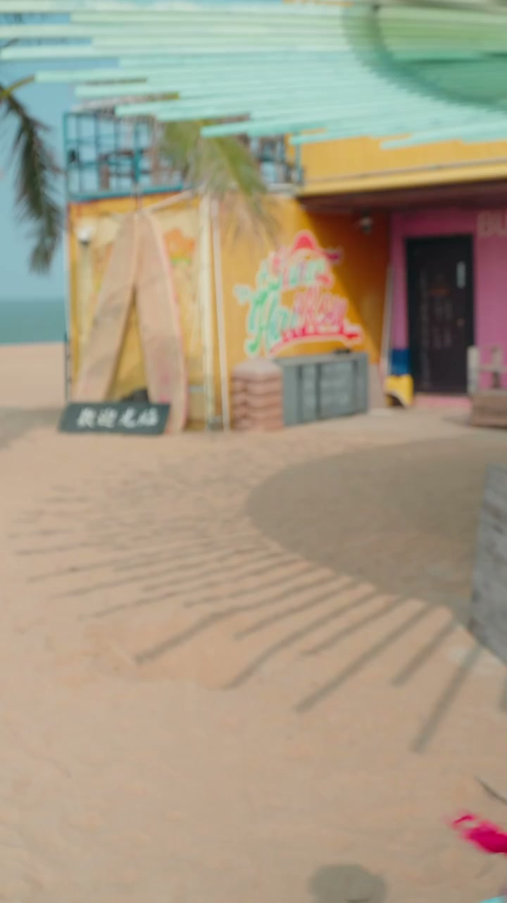

内容要点
这段视频围绕「用这两招，观众的眼睛根本舍不得移开👀」展开，按时间介绍其中的关键环节。看看导演们翻明了一个多有意思的手法。
拍摄与画面处理
看看导演们翻明了一个多有意思的手法。用来持续抓住观众的注意力。注意到这个剪切了吗?。虽然画面里我变笑了。但你是不是马上就找到我在哪儿?。这是因为在前一个镜头里。你的注意力已经集中在我的脸上。而下一个镜头里。我还在同一个位置。所以你的眼睛不要重新找我

[00:00] 拍摄与画面处理相关画面。
Footage on shooting and image processing.
关键技巧展开
把画面里最有意思的对象。放在这些线的焦点上。而任何东西可以放在另外一个焦点上。写著构图。只要把主机放在这些位置上。这样不仅有了精神。而卸赢到观众的视线。这个技巧被很多导演用。不管你拍照片或者拍视频。效果会一样的好
[00:36] 关键技巧展开相关画面。
Footage expanding on the key techniques.
总结
把画面里最有意思的对象。